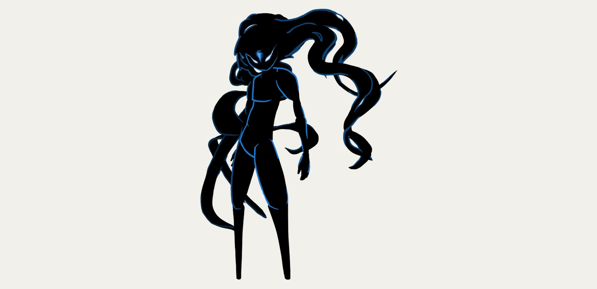
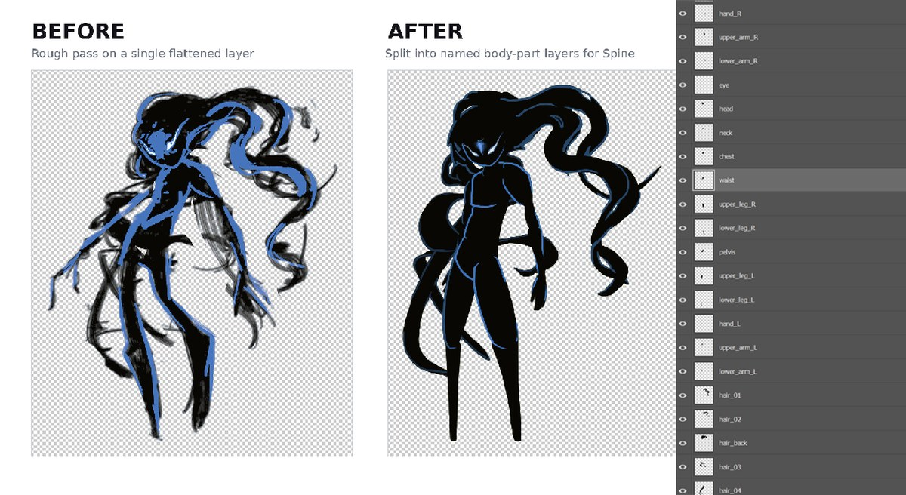
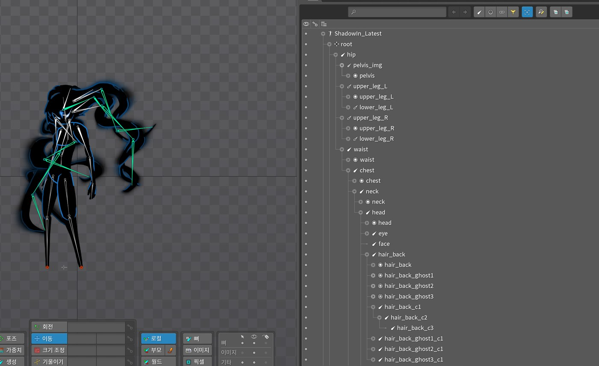
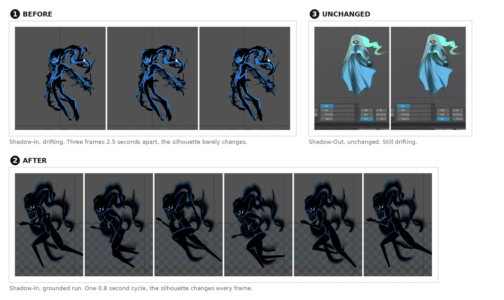

Capstone · Three Wheeling Whiteboards, 5 people · In development
IntoTheShadow
A 2D combat platformer where moving in and out of shadow decides what can kill you. I work across audio, animation, VFX and UI on it.

- The game
- You are the remaining soul of someone who was killed, a living shadow, going back for everyone responsible. Moving through shadow is both how you survive and how you attack.
- My role
- Audio design and composition, character animation and Spine rigging, VFX, UI design and art, and the systems design behind them. I also handle branch integration for the team's Unity project.
- Team
- Three Wheeling Whiteboards, five people, fourth-year capstone at Sheridan College, 2026 to 2027.
- Status
- In development. The team is building toward a Steam release, with the Level Up showcase in April 2027 as the first public milestone. Nothing here is a shipped product yet.
Context
One rule the whole game is built on
Shadow is not cover, it is a second state. In shadow the player is intangible and fast and cannot attack; out of shadow they can attack and can be killed. Every ability is a way of crossing that line: flattening into a wall and slipping out behind an enemy, diving into a shadow, dropping out of a light overhead, dissolving and reforming somewhere else. Shadow abilities drain an energy bar, and when it runs out the player is forced back into the exposed state.
That rule is what makes my parts of the project connected rather than separate jobs. The player is two Spine skeletons because they are two states. The music resets on death because death is the only thing that undoes progress. The dash trail shows how far you actually moved because the whole game is about judging distance to the next patch of dark.
My work
01Adaptive music that never restarts
The music used to restart from the top every time the player died, so the worst moment in a run always sounded the same. I rebuilt it as one continuous take with four layers that open on kills and collapse on death, running in FMOD. Dying now costs the layers you earned instead of the song.
I composed the track, designed the layer system and wired it into the build.
02Two characters, because there are two states
The player is built as two separate Spine skeletons, Shadow-In and Shadow-Out, rather than one rig with a costume change. They share a silhouette but not a vocabulary: dash belongs to Shadow-In, attack belongs to Shadow-Out, and the states need to read differently the moment the player crosses between them.
Rigging started by taking the character apart. The art arrived as a rough pass on one flattened layer, so I split it into named body-part layers before any bone existed.


Hair is the part that carries the ink look. Each of the four front strands is three bones with three trailing ghost copies at 1.14, 1.28 and 1.44 times the thickness, all on physics, so the silhouette keeps bleeding after the body stops. A hair wiggle runs on its own animation track at all times and speeds up 2.5 times during a dash, so the character is never completely still.
03Making the shadow state read as fast
Both states drifted at first. The character floats, which fits the concept, but in a run cycle it meant the silhouette barely changed over two and a half seconds. Nothing about the movement told the player they were going fast, so the fast state did not feel fast.
I rebuilt Shadow-In as a grounded run, six poses over 0.8 seconds, where the silhouette changes every frame. Shadow-Out kept drifting on purpose: it is the exposed, vulnerable state, and the contrast between them is now doing work the UI does not have to.

[Full case study in progress]
04VFX, and what a trail is allowed to say
VFX is mine on this project, including the ink textures the effects are built from, which I make rather than source. The rule I work to is that an effect has to report something true. The dash trail shows exactly the distance covered during the dash and stops there, rather than following the character through the inertia afterwards, because its job is to teach the player how far a dash actually carries them before they have to commit to one.
05UI, and keeping five people's work mergeable
I design and draw the UI, and I handle branch integration for the team's Unity project, which on a five-person capstone is a design job as much as a Git one. Deciding what gets merged and when is how the build stays playable in a week where everyone is changing the same scenes.
Materials